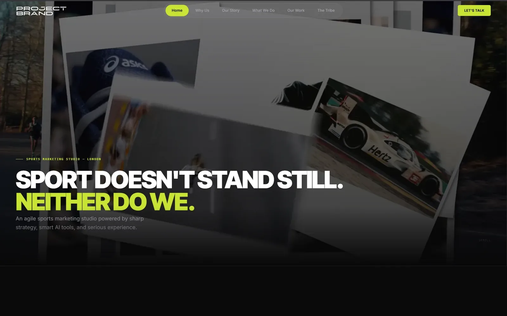
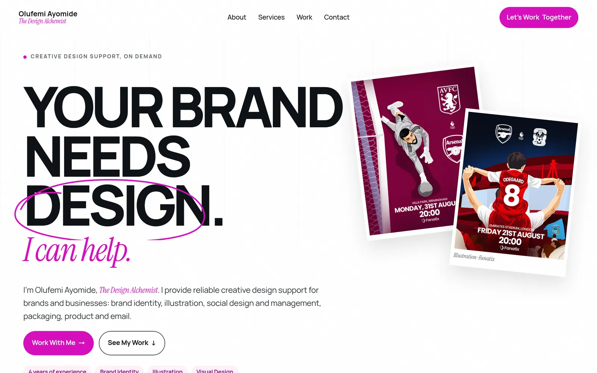
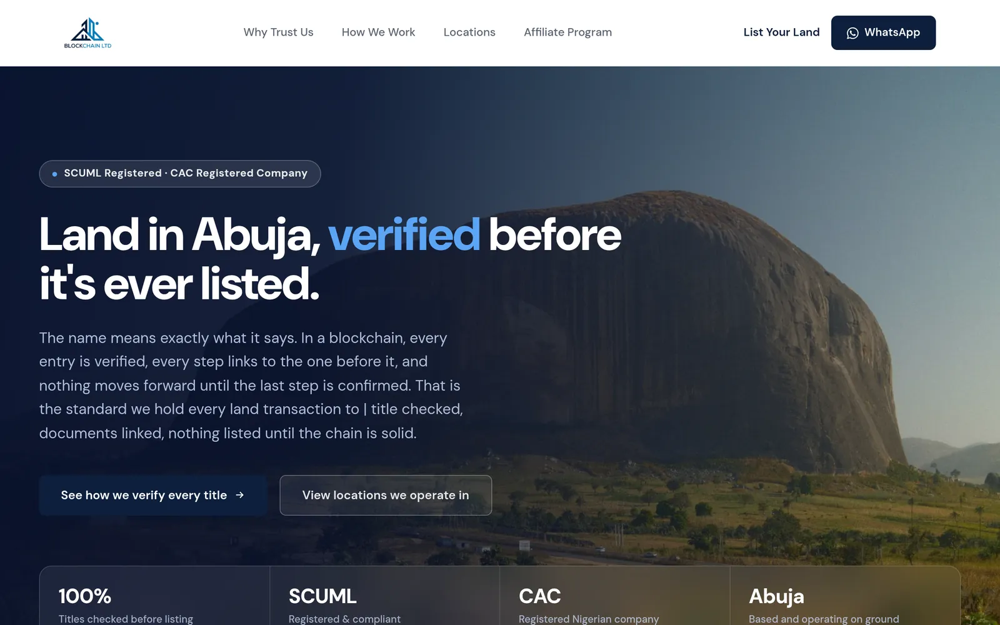

Most people start with pages.
I start with what the business is trying to make happen: who it's for, what should be obvious, and what someone should do next.
Hello, I'm
Web Developer · Digital Builder
I build digital experiences that make businesses easier to understand, trust and engage with. Not just a site that looks finished. A presence that helps the right people decide to work with you.
Available for selected projects
Since 2018 Building
Web · Design · Digital The craft
International Clients
AI-assisted Workflow
The approach
A website is rarely just a website. It's how a business introduces itself, how a customer decides whether to trust it, and how a brand explains what it does. So before pages, motion or code, I want to understand the person and the business behind the project.
The project comes second.
The person comes first.
I start with what the business is trying to make happen: who it's for, what should be obvious, and what someone should do next.
If visitors can't tell what you do, or how to enquire, the design didn't do the job. Clarity is part of the work.
Positioning, structure, messaging and the path after someone gets in touch matter as much as the build itself.
Selected work
A few digital experiences I've designed and built. Visit a live site to see the work.

Sports marketing · United Kingdom
A presence for a London sports marketing studio. Sharp enough for the work, simple enough to start a conversation.
Visit site
Professional designer
A portfolio website for a professional designer. A site that reflects her work and gives the right people a way in.
Visit site
Real estate · Abuja
The official website for a real estate company in Abuja. The public face of the business, built so visitors understand the offer and can get in touch.
Visit siteWorking with Lerin was genuinely refreshing. As a small business owner in the sports industry on the outskirts of London, my time is everything, and from day one, Lerin made the process completely stress free. His communication was prompt and clear throughout and the structured workback schedule he provided was a game changer for keeping the project moving without it eating into my day to day.
He brought real professionalism and thoroughness to every stage, asking the right questions to understand my business and delivering work that felt considered, not cookie cutter. If you are a busy founder who needs someone reliable to handle your web presence without hand holding. Lerin is your guy. I would not hesitate to recommend him.
Sarah Mundy Founder, The Project Brand, London
Working with Lerin to build my portfolio website was one of the best decisions I've made for my business as a freelancer. He took the time to understand my work and translated it into a site that actually reflects who I am as a designer.
Within 1 day of launching, it brought in a new client lead, something my old portfolio never did. If you need a designer who delivers both great design and real results, I highly recommend him.
Olufemi Ayomide Professional Designer
Understand. Design. Build.
Three ways in. Each one is still a custom piece of work, not a package pulled off a shelf.
Custom websites designed around your business, audience and goals, not templates. The site should make what you do obvious, and make the next step easy.
Sites that do more than look good: lead capture, booking, content and the flows that keep an enquiry from getting lost.
When the current site no longer represents the business, I redesign and rebuild it from the ground up, keeping what still works, replacing what doesn't.
Also available: landing pages, content updates, maintenance and thoughtful AI integrations where they actually help.
Who it's for
Founders, professional practices, property businesses, creative studios and teams rebuilding an outdated site, especially where the website is part of how they win trust and new work.
We talk about the business, the audience, the problem and what success actually looks like. No long brief required to start.
I turn that into structure, visual direction and the experience: what the site needs to say, and in what order.
I design and develop the actual digital experience, and keep you close enough that nothing important is guessed.
We test, refine and put it in front of your customers. Then we make sure the next step (enquire, book, write) actually works.
How I work with tools
I use AI to move faster on research, drafts and development, not to outsource thinking. The strategy is mine. The judgment is mine. The final decisions are mine.
That means you get someone who can explore further and still take responsibility for what ships.
About
I'm Lerin, Olúwapámílérìn Ayọ̀midé.
I've been in this space since 2018, building, learning, and doing the work behind the scenes. For years that was enough: I stayed in the background and shipped.
In January 2026 I stepped forward as a freelancer. Since then I've worked directly with brands, delivering accurately and leaving people satisfied with the work.
I care about clean design, simple experiences, and systems that actually make someone's work easier. Good work should look good. It should also make sense.
The first conversation
You don't need a finished brief. Tell me what you're building, what isn't working, and where you want to go. I'll tell you what I think, including if I'm not the right person.
The business, the audience, and what the website is supposed to do.
An old site, a confusing offer, or enquiries that go nowhere.
If it's a fit, we talk about direction, scope and the next step.
No. The first conversation is how we find the brief. Bring the business problem; we'll shape the work from there.
Both. I take work from understanding through design and development, so the idea and the site stay in one pair of hands.
That's often the starting point. If it no longer represents the business, we talk about a rebuild rather than another coat of paint.
Tell me what you're working on. I'll tell you what I think. Prefer to talk it through? Book a call.
Available for selected projects
Message received. I'll read it and reply.